쥬비안 · 기관 손상
PC 1280 × 800

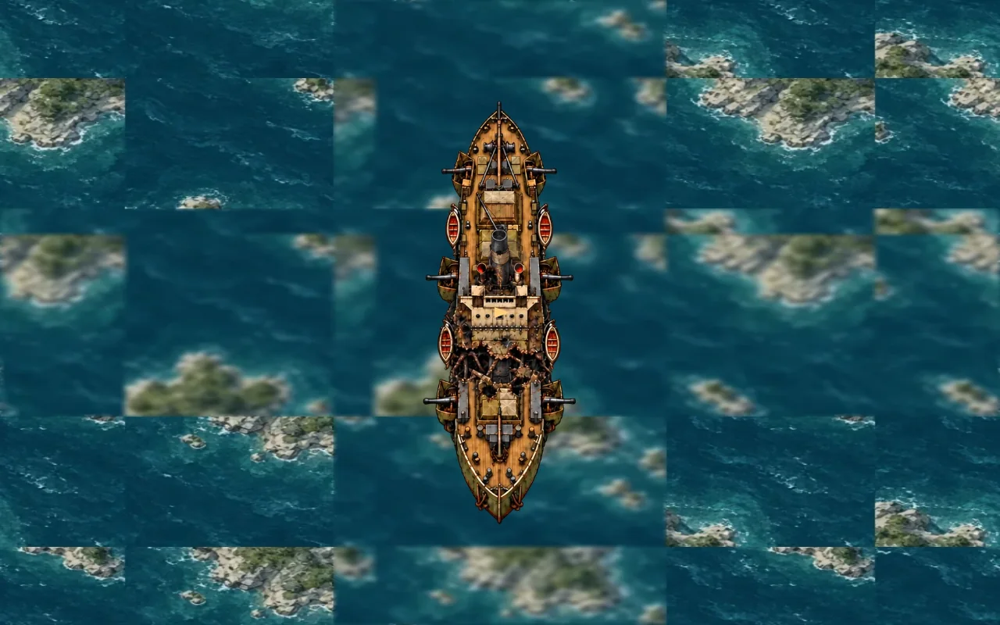
모바일 390 × 844

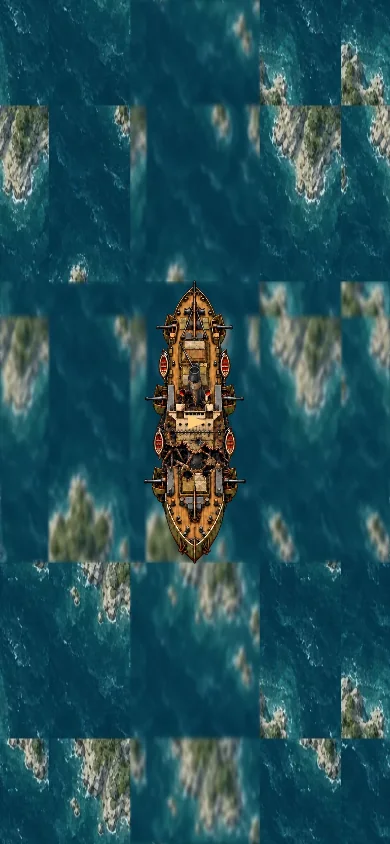
테섭 head-on-test-preview · 기준 f025439189096ff6956bfcba5e49dd1cb01d29d7
브랜치 feat/adriatic-boss-rebuild-test-20261001
테섭 소스의 실제 drawStageBoss를 native Canvas로 실행한 비교다. 양쪽에 같은 해상도·줌·시나리오를 사용했다. PC·모바일 각각 정상·손상·분리·침몰을 확인했으며, 개편본 렌더링 14장 모두 필요한 이미지 누락이 없었다.
브라우저의 로컬 게임 접속이 차단돼 직접 플레이 검증은 하지 못했다. 이 이미지는 보스 렌더러만 실행한 결과이며 전체 게임의 배경·HUD·입력 검증을 포함하지 않는다. 브랜치만 push하며 병합·배포·실서버 검증은 수행하지 않는다.
| 대상 | 이전 | 개편 |
|---|---|---|
| 쥬비안 분리 | 분리 그림의 위치·크기와 두 새 객체의 중심이 달라 선체가 겹침. 뒤 선체가 기준 위치로 돌아가 겹침 보정도 취소됨. | 한 좌표계로 절단 위치·선체 크기·피격·포구를 계산. 두 선체 이동이 끝난 뒤 회전한 전체 선체의 간격을 보정. 뒤 선체는 현재 위치에서 이동. |
| 쥬비안 공격·기믹 | 총알 속도에 가까운 선체 돌진. 분리된 선체의 기관·포탑 손상 상태가 사라짐. | 선회·준비·잠금 항로·어뢰 발사·저속 선체 전진. 후미 예측 박격포와 교차 사격. 파괴된 기관·포탑 상태를 분리 뒤에도 유지해 기동·화망 감소. 준비·발사 중 후미가 공간을 양보해 어뢰를 실제 선수에서 발사. |
| 슈튜트가르트 기동·공격 | 제자리 회전. 보스 객체와 회전한 함포의 표시 위치가 따로 움직임. 함포 전멸 뒤에도 표적 플랙 가능. | 완만한 원호 항행. 선체·피격·함포·포구 위치 동기화. 기관 파괴 시 기동 감소. 함포별 화망 제거. 이동 예측과 순차 플랙, 마지막 포탑 파괴 시 포격 중단. |
| 손상·침몰 | 원형 검은 손상 표시와 기존 정상 선체 중심. | 전용 손상·분리·잔해 아틀라스 2종. 부위별 파손·기관 화염·항적. 침몰 회전을 선체 자체 위치를 기준으로 처리하고 기존 수면 효과 유지. |
테스트 45 / 45 통과 (기존 테섭 테스트와 새 보스 테스트 7개). 새 테스트는 70초 선체 겹침 검사, 100초 실제 포구 어뢰 발사, HP 보존, 손상 상속, 회전 피격, 기관 감속, 함포 전멸을 포함한다.
루트 ES 모듈 105개 구문 검사 통과. 상대 경로는 기준 원격 트리와 추가 파일을 대조해 전부 확인했다. 기존 검증 스크립트 전체 실행은 작업 공간에 다운로드하지 못한 1MB 초과의 관련 없는 boss-drachen-parts-v2.webp 1개 때문에 파일 존재 검사에서 멈췄다. 이 파일은 기준 원격 트리에 존재하며 이번 변경 대상이 아니다.
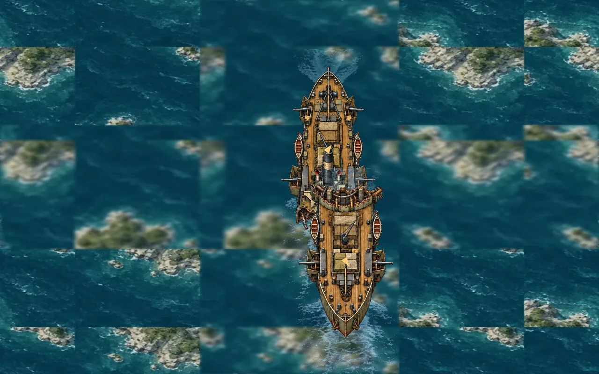
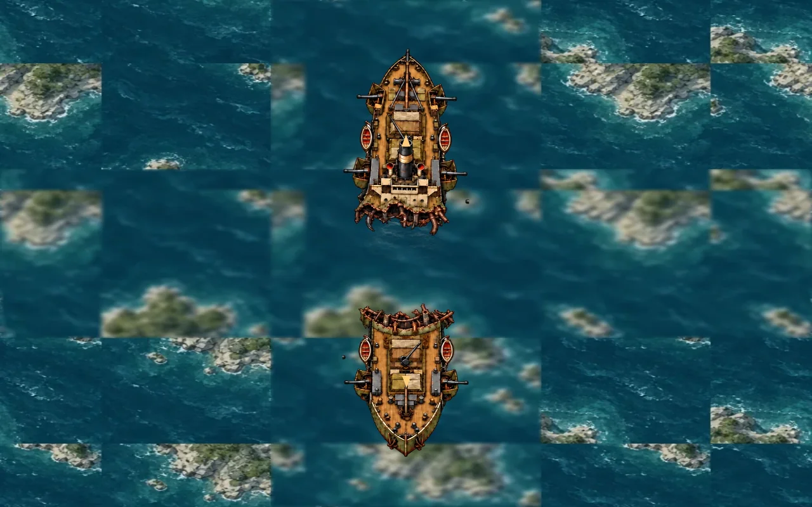
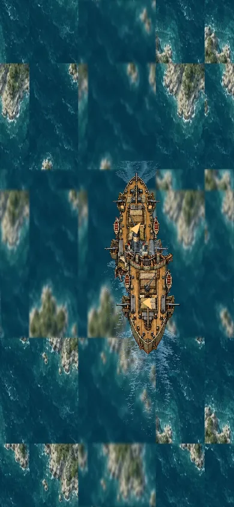
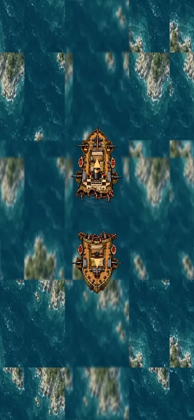


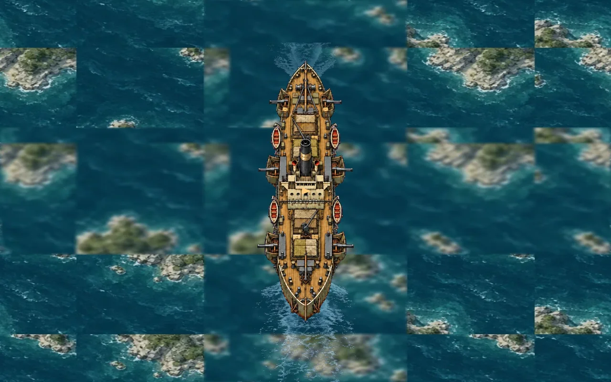
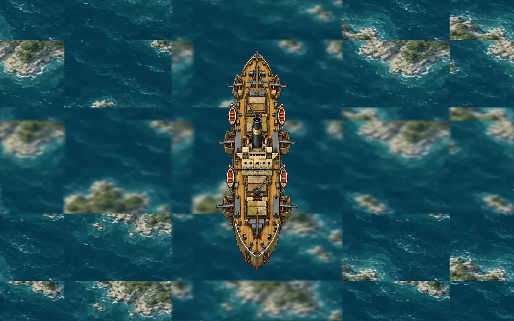
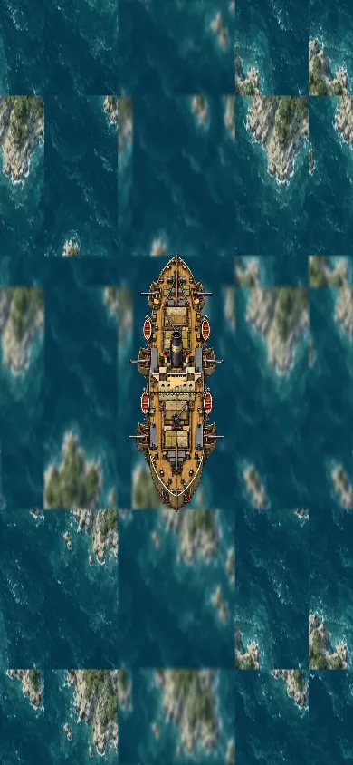
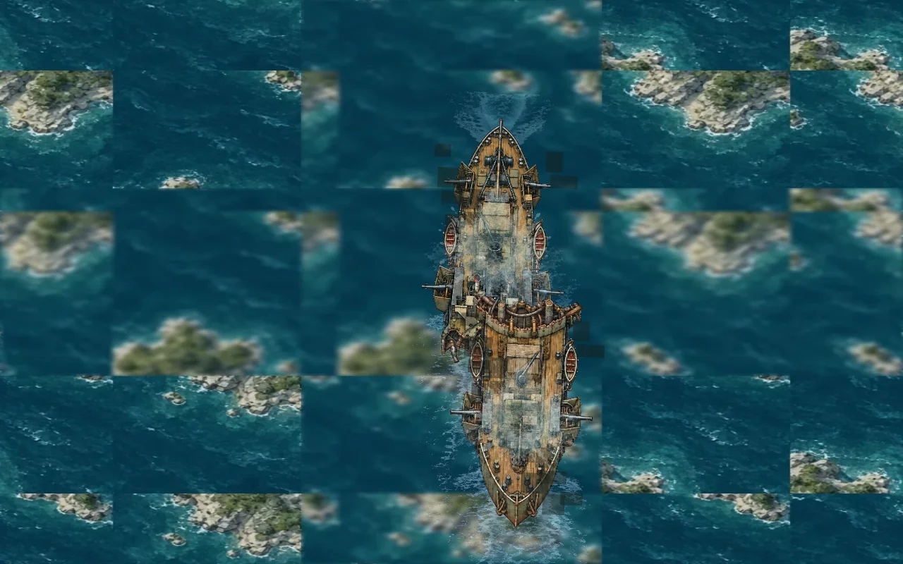
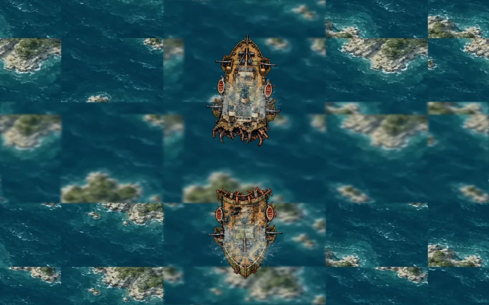
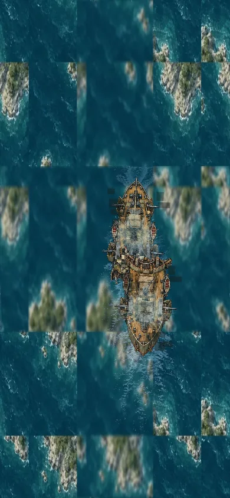
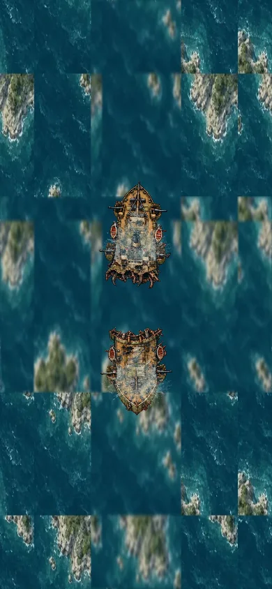
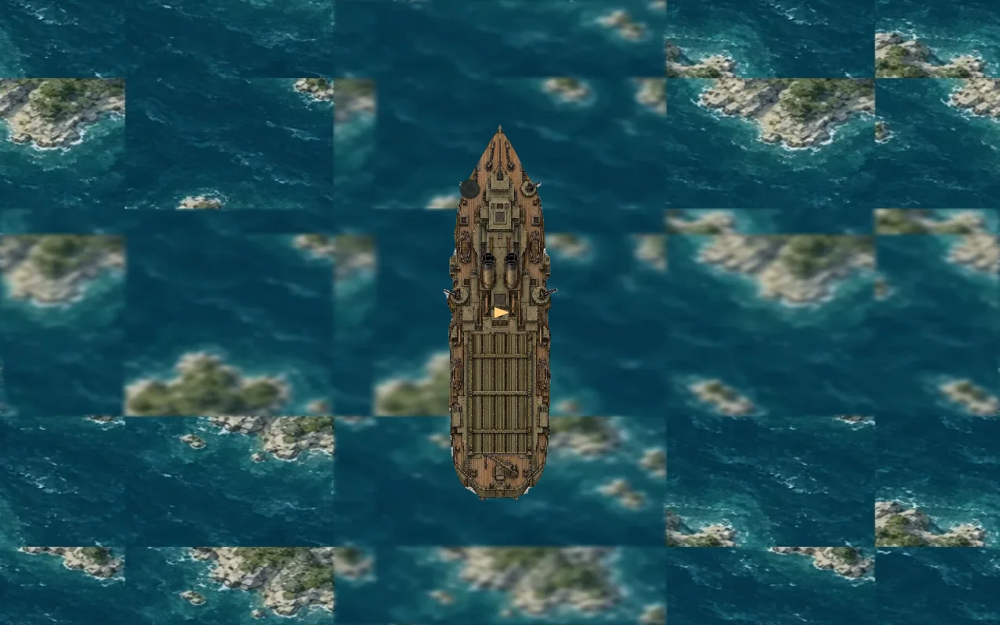


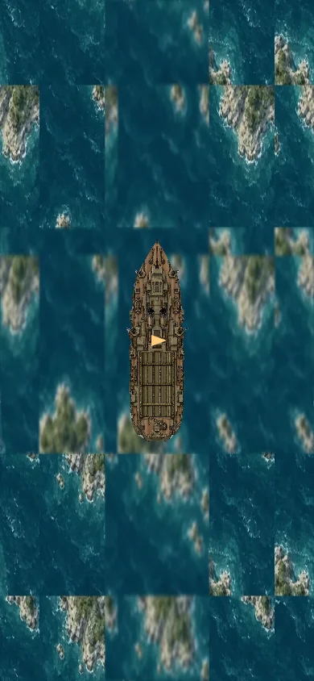

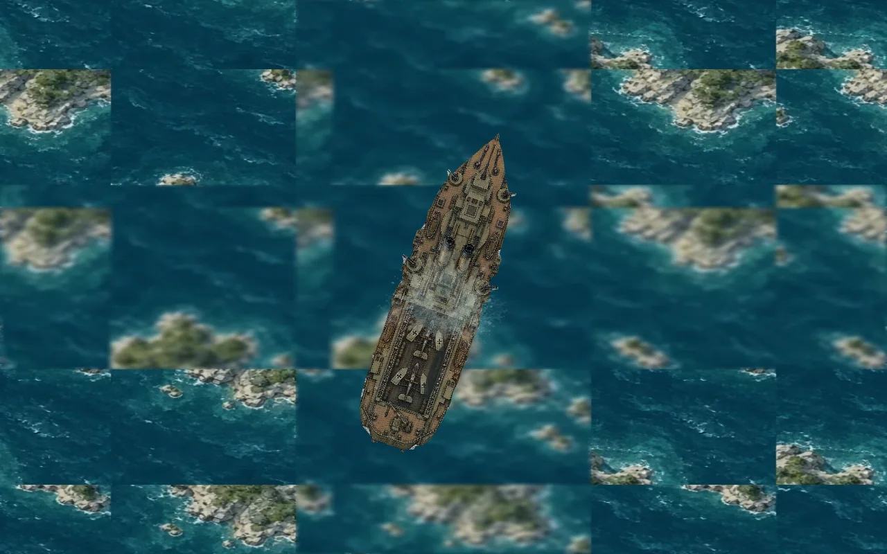
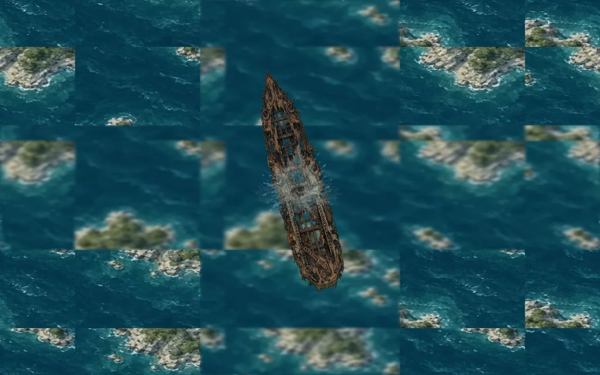
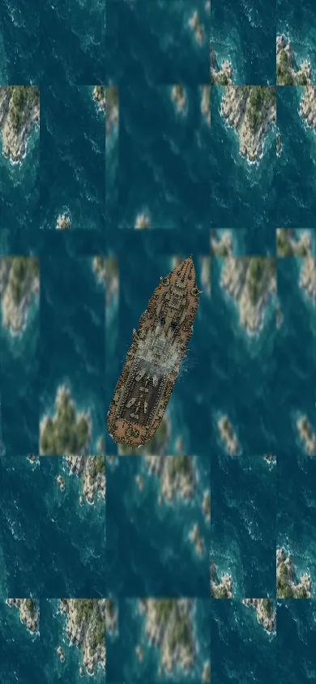
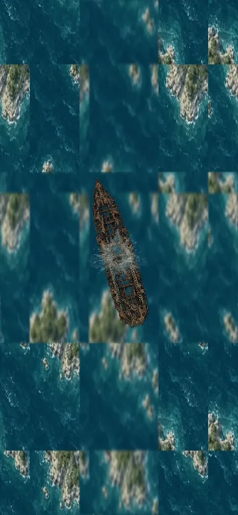